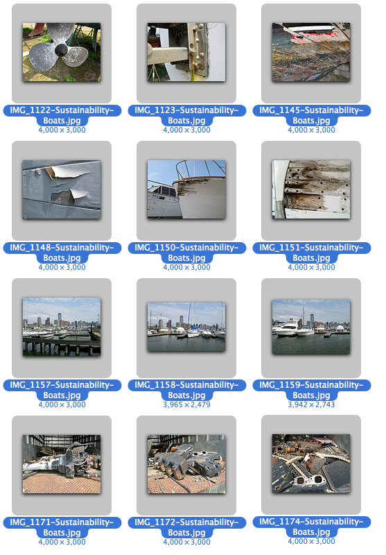

Please Use the Browser Keys to Return to the Main Program
More On: Poor Quality Product Designs...
Below you can see some product designs, that to some extent ignored integrated, sustainable design and manufacturing knowledge, or in other words Concurrent Engineering within a PLM (Product Lifecycle Management) framework. In our competitive world such products fail and therefore companies that design and produce them eventually go down the drain together with their failed products...
When you disassemble and analyze product designs you can always learn a lot about the way they were designed, and manufactured.
As you study these designs, always consider, that a great designer is a multi-talented and skilled person, who works in a team, and understands all aspects of product design as well as manufacture, test, assembly, maintenance and even remanufacturing and recycling, following lean and sustainable green principles and technologies. In other words, a good designer must be able to listen to customers and truly live with the product, process and service system he or she creates...
A lean and green design and manufacturing organization should continuously improve existing business practices by focusing on eco-friendly sustainability, agility and continuous process improvement. Additionally, the lean design and manufacturing philosophy addresses performance improvement by reducing waste. This could be waste resulting from poor quality design, from overproduction, idle time in the process, unnecessary selection and/or transport of material, over-processing of material due to poor tool or product design, inventory of more than the absolute minimum, unnecessary movement by employees during work or production of defective parts.
In this particular set you can see some 'professionally designed and built boats, boating parts and related goods'... the key here is to identify what could go wrong and what did go wrong in terms of integrated product / process design and sustainable design... or the lack of it...
In this set you can see various design and manufacturing faults, including poor material selection, poor quality manufacturing processes, and even poor quality assembly... and of course abuse by men, as well as nature... all good examples to analyze and maybe not to follow if you want to maintain sustainable green design principles...
Just click on the individual images below to see them in full size. Please note, that these are often large, hi-def files, so be patient...

|
.
© Copyright and Design Rights by CIMware USA, Inc., and CIMware Ltd. UK: Hi-Tech. USA and International Advanced Design, Manufacturing and Management with IT Case Studies following a browser readable, interactive multimedia talking book-style electronic publication format with text, images, interactive digital videos, 3DVR objects and 360 degree panoramic images by CIMware USA, Inc., and CIMware Ltd. UK. Web: http://www.cimwareukandusa.com, Email: cimware@mac.com. Virtual Product Demo concept and system design by Paul G Ranky, PhD. All Rights Reserved! |
|||